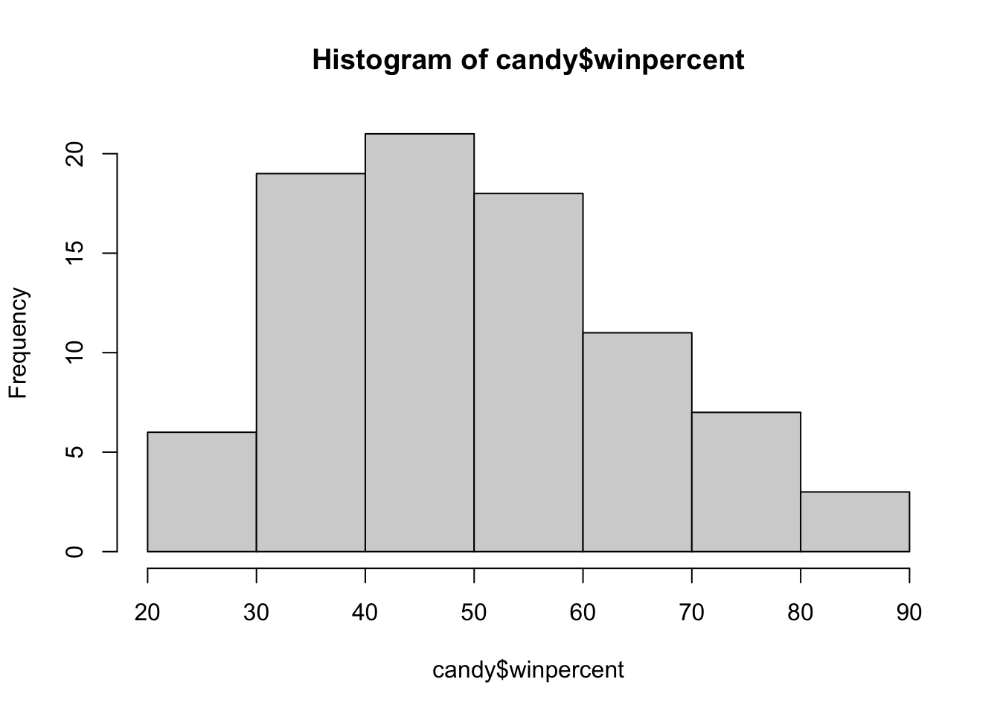
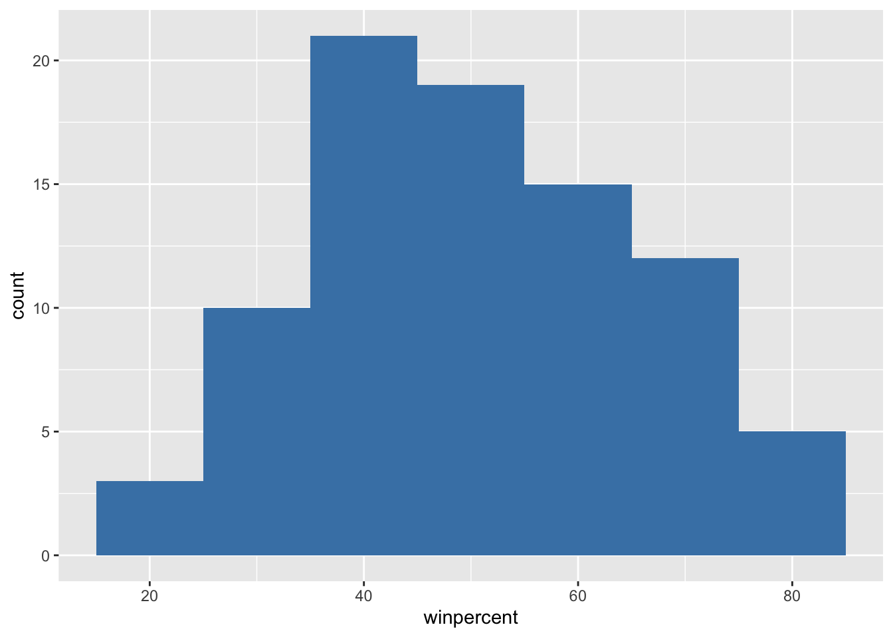
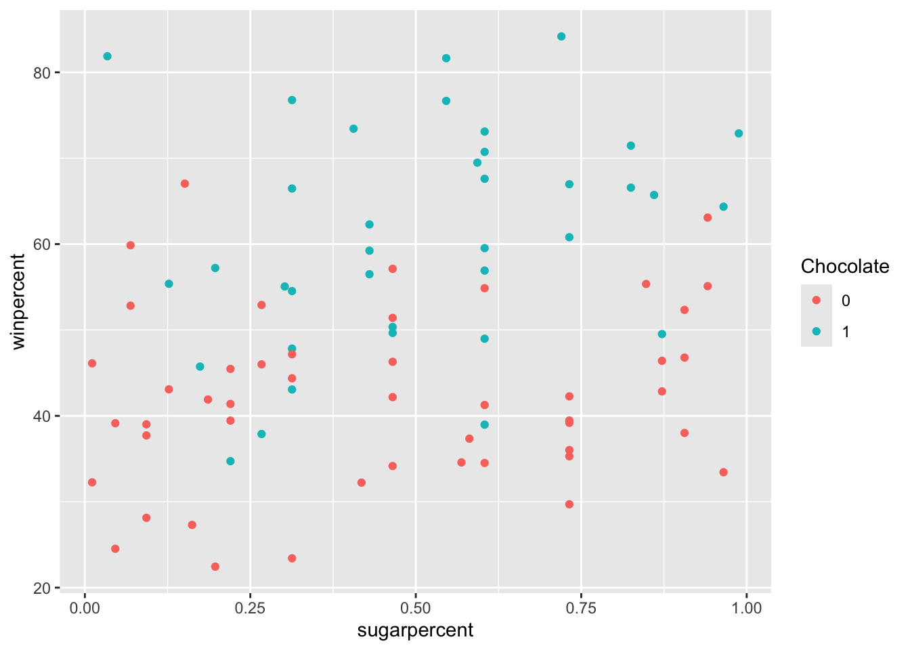
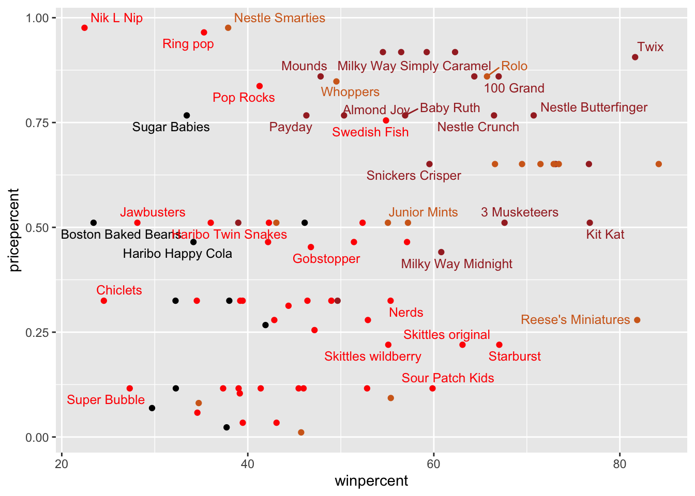
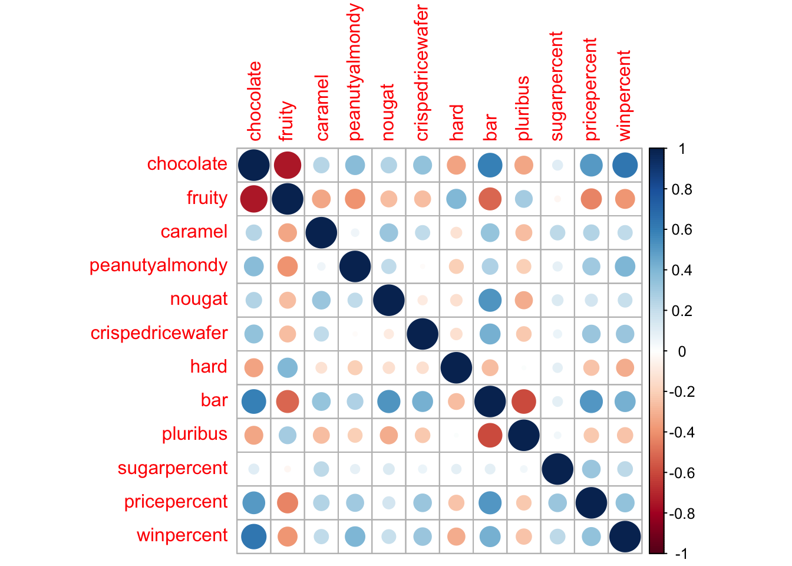
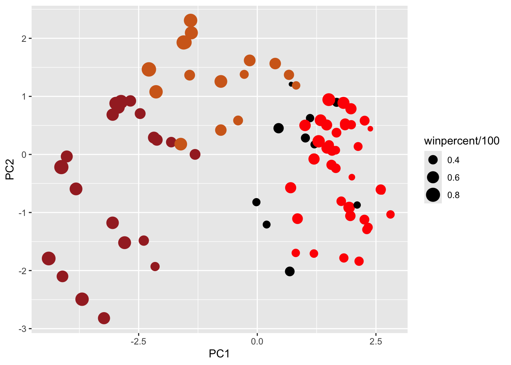
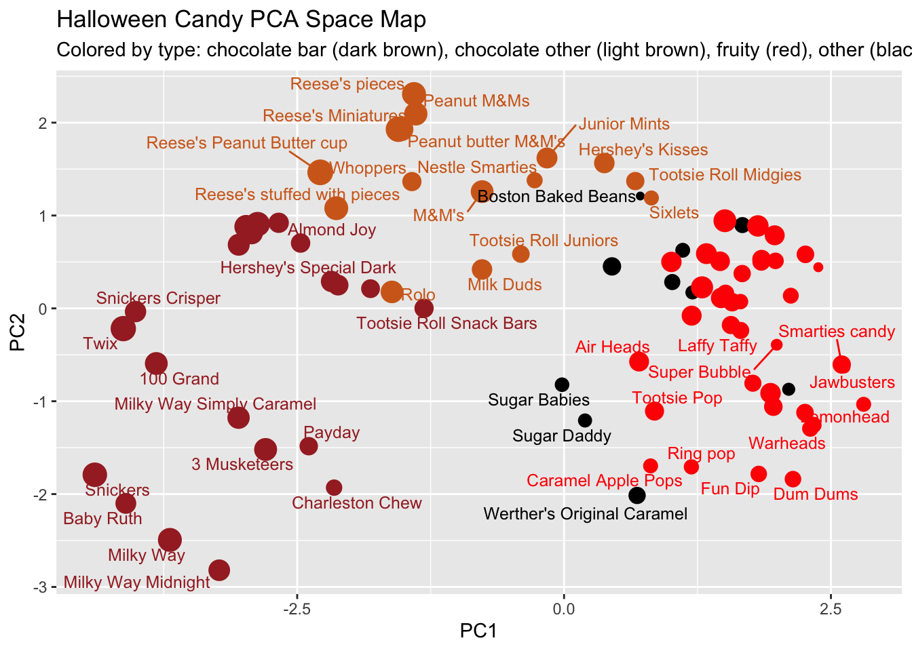
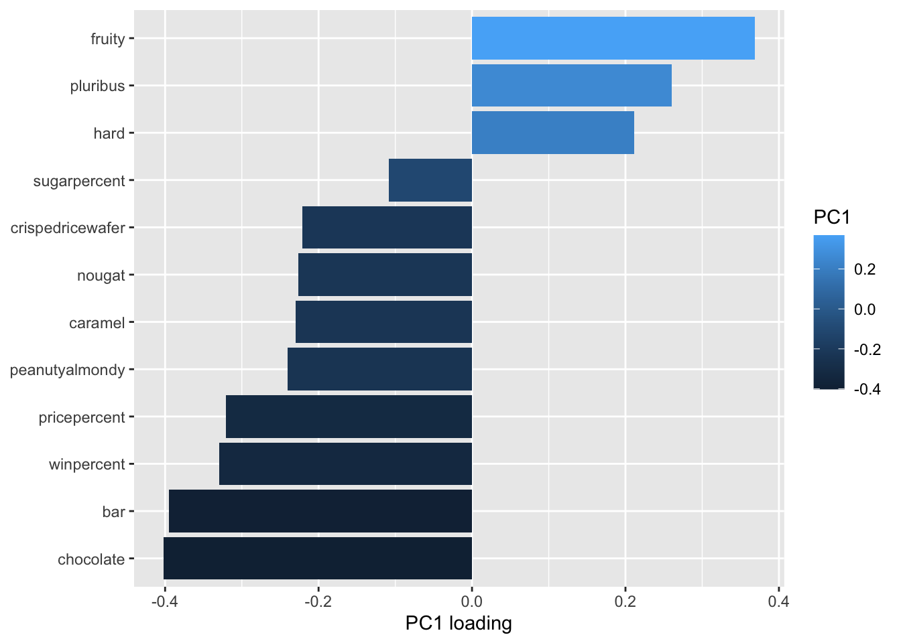
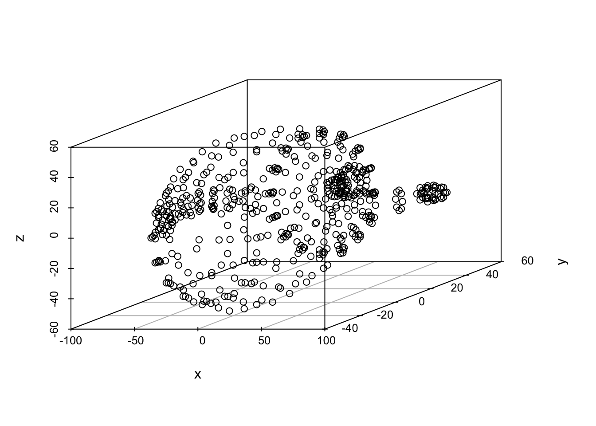

chocolate fruity caramel peanutyalmondy nougat crispedricewafer
100 Grand 1 0 1 0 0 1
3 Musketeers 1 0 0 0 1 0
One dime 0 0 0 0 0 0
One quarter 0 0 0 0 0 0
Air Heads 0 1 0 0 0 0
Almond Joy 1 0 0 1 0 0
hard bar pluribus sugarpercent pricepercent winpercent
100 Grand 0 1 0 0.732 0.860 66.97173
3 Musketeers 0 1 0 0.604 0.511 67.60294
One dime 0 0 0 0.011 0.116 32.26109
One quarter 0 0 0 0.011 0.511 46.11650
Air Heads 0 0 0 0.906 0.511 52.34146
Almond Joy 0 1 0 0.465 0.767 50.34755
Q1. How many different candy types are in this dataset?
sum(nrow(candy))
[1] 85
There are 85 candy types in the dataset
Q2. How many fruity candy types are in the dataset?
sum(candy$fruity ==1, na.rm =TRUE)
[1] 38
There are 38 candies that are fruity.
Q3. What is your favorite candy in the dataset and what is it’s winpercent value?
candy["Almond Joy", ]$winpercent
[1] 50.34755
candy["Kit Kat", ]$winpercent
[1] 76.7686
candy["Tootsie Roll Snack Bars", ]$winpercent
[1] 49.6535
Almond Joy is my favorite candy and it’s winpercent value is 50.34%
Q4. What is the winpercent value for “Kit Kat”? Q5. What is the winpercent value for “Tootsie Roll Snack Bars”?
The winpercent for Kit Kat is 76.76% and for Tootsie Roll Snack Bars it is 49.65%.
library("skimr")skim(candy)
Data summary
Name
candy
Number of rows
85
Number of columns
12
_______________________
Column type frequency:
numeric
12
________________________
Group variables
None
Variable type: numeric
skim_variable
n_missing
complete_rate
mean
sd
p0
p25
p50
p75
p100
hist
chocolate
0
1
0.44
0.50
0.00
0.00
0.00
1.00
1.00
▇▁▁▁▆
fruity
0
1
0.45
0.50
0.00
0.00
0.00
1.00
1.00
▇▁▁▁▆
caramel
0
1
0.16
0.37
0.00
0.00
0.00
0.00
1.00
▇▁▁▁▂
peanutyalmondy
0
1
0.16
0.37
0.00
0.00
0.00
0.00
1.00
▇▁▁▁▂
nougat
0
1
0.08
0.28
0.00
0.00
0.00
0.00
1.00
▇▁▁▁▁
crispedricewafer
0
1
0.08
0.28
0.00
0.00
0.00
0.00
1.00
▇▁▁▁▁
hard
0
1
0.18
0.38
0.00
0.00
0.00
0.00
1.00
▇▁▁▁▂
bar
0
1
0.25
0.43
0.00
0.00
0.00
0.00
1.00
▇▁▁▁▂
pluribus
0
1
0.52
0.50
0.00
0.00
1.00
1.00
1.00
▇▁▁▁▇
sugarpercent
0
1
0.48
0.28
0.01
0.22
0.47
0.73
0.99
▇▇▇▇▆
pricepercent
0
1
0.47
0.29
0.01
0.26
0.47
0.65
0.98
▇▇▇▇▆
winpercent
0
1
50.32
14.71
22.45
39.14
47.83
59.86
84.18
▃▇▆▅▂
Q6. Is there any variable/column that looks to be on a different scale to the majority of the other columns in the dataset?
The hist column appears different compared to the rest of the columns. Also, winpercent is different because it is not comprised of mostly 0s and 1s but actual percentages.
Q7. What do you think a zero and one represent for the candy$chocolate column?
A 0 means that it is a candy without chocolate and a 1 means that that there is chocolate in the candy kind of like a TRUE and FALSE.
Q8. Plot a histogram of winpercent values using both base R and ggplot2.
hist(candy$winpercent)

summary(candy$winpercent)
Min. 1st Qu. Median Mean 3rd Qu. Max.
22.45 39.14 47.83 50.32 59.86 84.18
library(ggplot2)ggplot(candy, aes(x=winpercent)) +geom_histogram(binwidth =10, fill ="steelblue")

Q9. Is the distribution of winpercent values symmetrical?
The distribution is slightly symmetrical but there is a skew to the right. So there are many candies that win between 35-50% of the time but then there are more candies that win at a better than 50/50 chance rate.
Q10. Is the center of the distribution above or below 50%?
The center of the distribution is just below 50%.
ggplot(candy, aes(x = sugarpercent, y = winpercent, color =factor(chocolate))) +geom_point() +labs(color ="Chocolate")

summary(candy$winpercent)
Min. 1st Qu. Median Mean 3rd Qu. Max.
22.45 39.14 47.83 50.32 59.86 84.18
Welch Two Sample t-test
data: choc and fruit
t = 6.2582, df = 68.882, p-value = 2.871e-08
alternative hypothesis: true difference in means is not equal to 0
95 percent confidence interval:
11.44563 22.15795
sample estimates:
mean of x mean of y
60.92153 44.11974
Q11. On average is chocolate candy higher or lower ranked than fruit candy?
On average chocolate candy is ranked higher than fruity candy.
Q12. Is this difference statistically significant?
The difference is significant for the ranking between chocolate and fruity candy.
Overall Candy Rankings
head(candy[order(candy$winpercent), ], n =5)
chocolate fruity caramel peanutyalmondy nougat
Nik L Nip 0 1 0 0 0
Boston Baked Beans 0 0 0 1 0
Chiclets 0 1 0 0 0
Super Bubble 0 1 0 0 0
Jawbusters 0 1 0 0 0
crispedricewafer hard bar pluribus sugarpercent pricepercent
Nik L Nip 0 0 0 1 0.197 0.976
Boston Baked Beans 0 0 0 1 0.313 0.511
Chiclets 0 0 0 1 0.046 0.325
Super Bubble 0 0 0 0 0.162 0.116
Jawbusters 0 1 0 1 0.093 0.511
winpercent
Nik L Nip 22.44534
Boston Baked Beans 23.41782
Chiclets 24.52499
Super Bubble 27.30386
Jawbusters 28.12744
head(candy[order(candy$winpercent, decreasing =TRUE), ], n =5)
library(ggrepel)# How about a plot of win vs priceggplot(candy) +aes(x=winpercent, y=pricepercent, label=rownames(candy)) +geom_point(col=my_cols) +geom_text_repel(col=my_cols, size=3.3, max.overlaps =5)

Q19. Which candy type is the highest ranked in terms of winpercent for the least money - i.e. offers the most bang for your buck?
Reese’s Miniatures have the highest winpercent with the lowest pricepercent.
Q20. What are the top 5 most expensive candy types in the dataset and of these which is the least popular?
ord <-order(candy$pricepercent, decreasing =TRUE)head( candy[ord,c(11,12)], n=5 )
pricepercent winpercent
Nik L Nip 0.976 22.44534
Nestle Smarties 0.976 37.88719
Ring pop 0.965 35.29076
Hershey's Krackel 0.918 62.28448
Hershey's Milk Chocolate 0.918 56.49050
The top most expensive candy types are Nik L Nip, Nestle Smarties, Ring pop, Hershey’s Krackel and Hershey’s milk Chocolate. The Nik L Nip candy is the least popular.
Exploring the correlation structure
library(corrplot)
corrplot 0.95 loaded
cij <-cor(candy)corrplot(cij)

Q22. Examining this plot what two variables are anti-correlated (i.e. have minus values)?
Chocolate and fruity are anti-correlated. So are Pluribus and bar, and bar and fruity.
Q23. Use your corrplot result to make a prediction: which variables do you expect will have the largest contributions (i.e. loadings) to PC1 (i.e., drive the most separation between candies along the first principal component)?
Whether the candy is chocolate or fruity will probably drive most of the separation.
# Make a new data-frame with our PCA results and candy datamy_data <-cbind(candy, pca$x)
p <-ggplot(my_data) +aes(x=PC1, y=PC2, size=winpercent/100, text=rownames(my_data),label=rownames(my_data)) +geom_point(col=my_cols)p

#library(plotly)#ggplotly(p)
Q24. Complete the code to generate the “Halloween Candy PCA Space Map” above. Be sure to have legable labels along with a plot title and subtitle:
p +geom_text_repel(size=3.3, col=my_cols, max.overlaps =7) +theme(legend.position ="none") +labs(title="Halloween Candy PCA Space Map",subtitle ="Colored by type: chocolate bar (dark brown), chocolate other (light brown), fruity (red), other (black)")

Q25. Complete the code to generate the loadings plot above. What original variables are picked up strongly by PC1 in the positive direction? Do these make sense to you? Where did you see this relationship highlighted previously?
ggplot(pca$rotation) +aes(PC1, reorder(rownames(pca$rotation), PC1), fill = PC1) +geom_col() +labs(x ="PC1 loading", y =NULL)

Q26. Based on your exploratory analysis, correlation findings, and PCA results, what combination of characteristics appears to make a “winning” candy? How do these different analyses (visualization, correlation, PCA) support or complement each other in reaching this conclusion?
The best candies seem to be chocolate candies that also contain peanut/almond and are also in a bar shape and are “crispedricewafer”. The PCA helps you see the big picture with all of the different candies and how similar or different they might be. The correlation shows how well certain variables move together or in opposite directions. Visualizing helped us see how the candies ranked against each other.
PCA from Scratch on a mystery dataset
m <-read.csv("mystery.csv")head(m)
x y z
1 40.6 28.3 -1.1
2 40.1 30.4 -1.1
3 40.7 31.1 -1.1
4 42.0 30.4 -1.1
5 43.5 28.3 -1.1
6 37.5 28.3 14.5
library(scatterplot3d)scatterplot3d(m)

# Step 1: Compute the covariance matrixcij <-cov(m)cij
x y z
x 2036.5727580 134.9131571 -0.2923907
y 134.9131571 761.6970573 0.0343026
z -0.2923907 0.0343026 553.4070615
# Step 2: Eigen decomposition of the covariance matrixans <-eigen(cij)eigenval <- ans$values # variance captured by each PCeigenvec <- ans$vectors # the new axes (principal components)# How much variance does each PC capture?round(cumsum(eigenval) /sum(eigenval) *100, 2)
[1] 61.18 83.49 100.00
Q28. What percentage of the total variance is captured by the first two principal components together? Does this seem like enough to get a meaningful 2D representation of a 3D object?
83.49 % of the total variance is captured by the first two principal components. This seems like enough to make a decent 2D representation.
# Step 3: Project data onto the top 2 eigenvectorsscores <-as.matrix(m) %*% eigenvec[, 1:2]# Set some colnames for easier plottingcolnames(scores) <-c("PC1", "PC2")
Q29. What is the mystery dataset? Does it make sense that PCA was able to recover a recognizable 2D view from 3D data? What has been “lost” in the reduction from 3D to 2D?
The mystery dataset is representing a tea pot. For going from 3D to 2D, you lose the depth and so a lot of the points just end up overlapping in 2D.
# Verify with prcomp() - note no scaling needed herep <-prcomp(m)summary(p)
Importance of components:
PC1 PC2 PC3
Standard deviation 45.2846 27.3418 23.5246
Proportion of Variance 0.6118 0.2230 0.1651
Cumulative Proportion 0.6118 0.8349 1.0000
Q30. Do the results from prcomp() match your manual eigen decomposition? The scores may differ in sign (direction) — this is normal and does not affect interpretation. Why do you think this is?
Yes, the results match. The line that is drawn for the principal components is just arbitrary and doesn’t need a specific direction. Flipping the direction doesn’t actually change the data and the relationships between points stay the same.